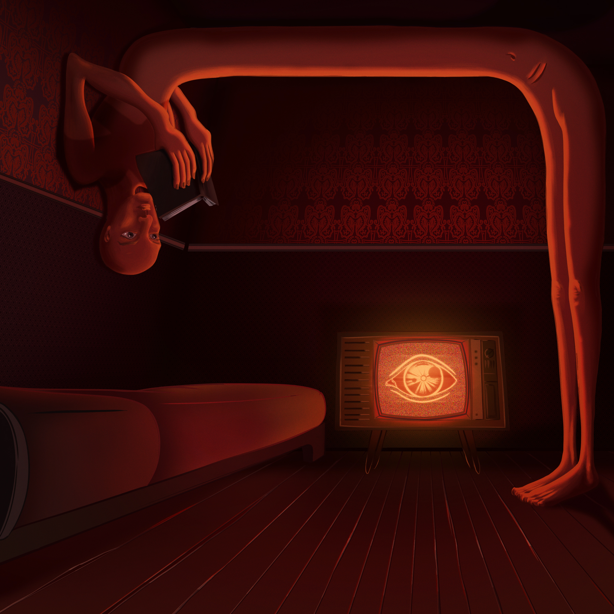

Reescribiendo el pasado en un mundo sin memoria.
Publicado el 14 de febrero de 2026
“Quien controla el pasado, controla el futuro. Quien controla el presente, controla el pasado.” – George Orwell, 1984
En 1984, el Partido reescribe la historia para que siempre encaje con su narrativa, borrando cualquier prueba que contradiga su verdad. Cuando leí esto, pensé que era una exageración, pura literatura, una distopía imposible. Pero en 2026, veo cómo nuestro pasado se desvanece o se manipula de formas que me hacen cuestionar qué tan lejos estamos de Oceanía.
Hoy, la historia no se guarda en libros polvorientos, sino en servidores, redes sociales y bases de datos. Pero estas memorias digitales son frágiles: publicaciones que desaparecen, artículos que se editan sin dejar rastro, videos que se eliminan por “violaciones de políticas”, el uso de la inteligencia artificial para promover las "fake news" creando imágenes hiperrealistas, hasta el punto que es imposible saber si es IA o es la realidad, etcétera. Me preocupa cómo las plataformas deciden qué información permanece y qué se borra. Si una empresa o un gobierno puede alterar un archivo digital, ¿cómo sabemos qué pasó realmente? ¿No es esto una forma de reescribir el pasado?
Pienso en cómo aceptamos o normalizamos estas desapariciones. Cuando un tuit (X, o como se llame ahora) polémico se elimina, cuando una noticia cambia su titular sin explicación, cuando ya no sabemos qué es real y qué es falso, si es sensacionalista o si es una capa de humo de algo mucho peor, apenas lo cuestionamos. En 1984, Winston trabaja en el Ministerio de la Verdad, destruyendo documentos para que el Partido siempre tenga razón. Irónico, ¿no? En esta distopía literaria nos encontramos al Ministerio de la Verdad divulgando mentiras, al Ministerio de la Paz haciendo la guerra... A veces, siento que todos somos cómplices de un Ministerio de la Verdad digital, dejando que la historia se desvanezca porque es más fácil no mirar atrás.
Resistir esta manipulación empieza por preservar la memoria. Creo que cada uno de nosotros puede ser un "guardián del pasado", negándonos a dejar que la verdad se disuelva. ¿Cómo proteges tú la memoria en un mundo que olvida tan rápido?
Hasta la próxima reflexión,
R.